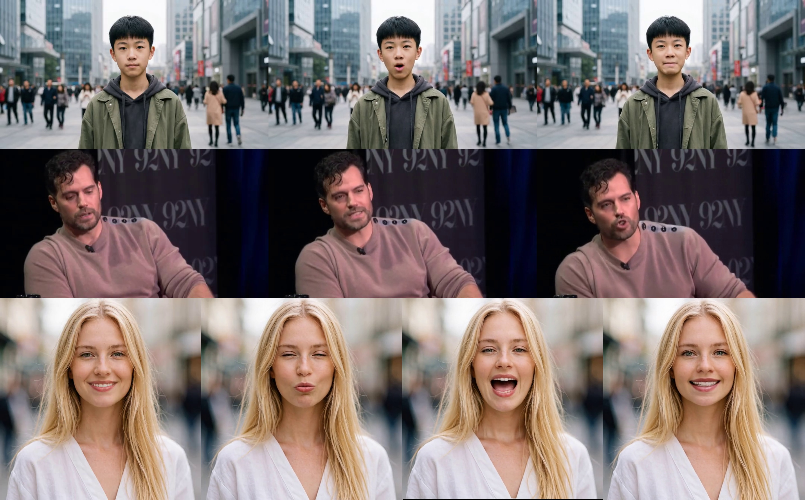
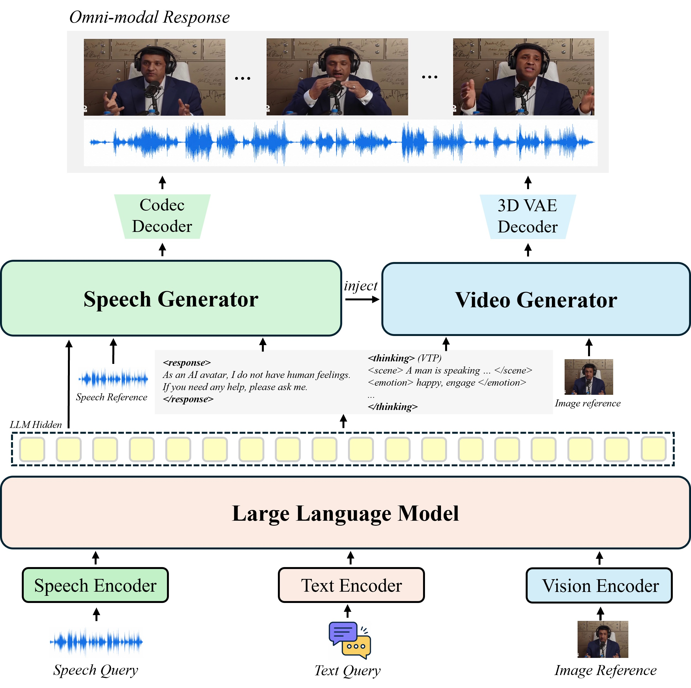
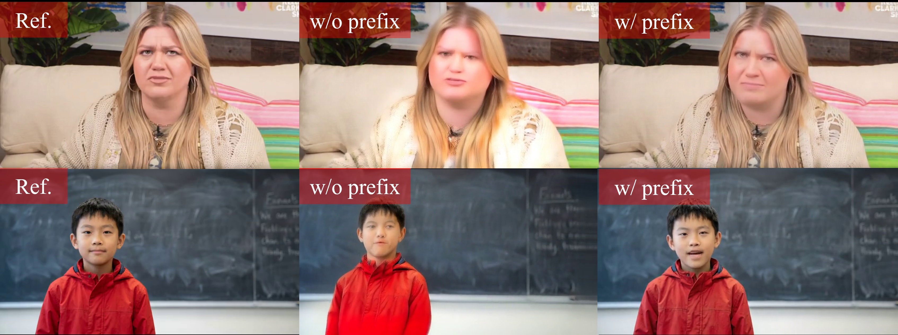
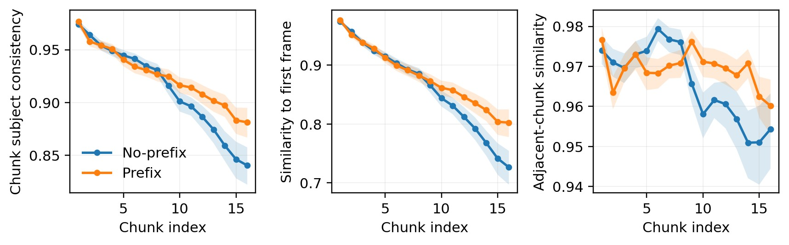

Multimodal Character Grounding
Speech, text, and reference vision provide conversational context, identity, appearance, and voice conditions.
Dialogue that can listen, speak, and appear.

A dialogue model plans visual intent and produces speech units; speech and video generators realize one synchronized response.

Speech, text, and reference vision provide conversational context, identity, appearance, and voice conditions.
The LLM emits a structured VTP for first frame, scene, emotion, movement style, and motion details.
Sixteen codebooks generate personalized speech and serve as a compact, frame-aligned video condition.
A full-sequence Teacher prioritizes quality; its Prefix-Streaming Student enables efficient incremental deployment.
Ex-Omni-2D preserves reference appearance while realizing dialogue-aware expression and speech-aligned motion.

Prefix Streaming reduces cumulative deformation while retaining reference identity.

Prefix is stronger from chunks 9–16 and reduces last-to-first consistency error by 21.4%.
If you find this work useful, please cite our paper and related prior work.
@article{zhang2026exomni2d,
title = {Ex-Omni-2D: Expressive Omni-Modal Dialogue
Models with Native Visual Presence},
author = {Zhang, Haoyu and Li, Zhipeng and Tang, Xiaoying
and Yu, Tianshu and Guo, Yiwen},
year = {2026}
}
@article{zhang2026ex,
title = {Ex-Omni: Enabling 3D Facial Animation Generation
for Omni-modal Large Language Models},
author = {Zhang, Haoyu and Li, Zhipeng and Guo, Yiwen
and Yu, Tianshu},
journal = {arXiv preprint arXiv:2602.07106},
year = {2026}
}